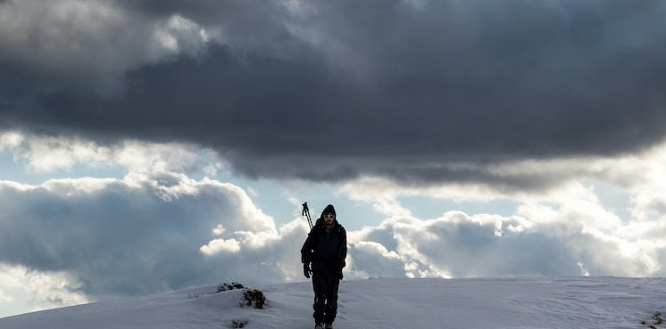

Mountain Climbing Risks
HAZARDS TO BE AWARE OF

Weather
What it is: The risk of sudden weather changes (usually in the form of storms), which happen often in the mountains.
Why it's dangerous: Storms can change the conditions you’re in, which makes your travelling harder and may expose you to the elements.
How to avoid it: Good planning and preparation are the only way to avoid this danger. You should know the weather report for your specific mountain before you leave the house, and you should always carry one extra layer of clothing on you (and one extra meal in case you get stranded)
Weather risks are mostly related to the chance that you get caught in an unforeseen storm while mountain climbing. This can expose you to the elements (leading to issues like hypothermia) and can make travelling more difficult.

hypothermia
What it is: The damage done to your body when you spend too long in the cold.
Why it's dangerous: Symptoms of hypothermia start with losing feeling in your digits, but they can progress to frostbite and eventually organ failure.
How to avoid it: Hypothermia is one of the main dangers that mountain climbers have to contend with. When you spend too long in the cold, your blood gets thick and your body eventually starts to shut down, which can have some pretty disastrous consequences.
Layers, layers, layers. Always bring more clothes than you need. Having food in your stomach or a hot drink is an excellent way to combat hypothermia. Another great way to prevent the symptoms from getting too bad is to move around and generate heat internally.

Altitude Sickness
What it is: A lack of oxygen to your brain caused by high altitudes (usually above 10,000 feet)
Why it's dangerous: Altitude sickness can cause dizziness, fatigue, flu-like symptoms, weakness, and a lack of critical thinking ability.
How to avoid it: Altitude sickness can cause dizziness, fatigue, flu-like symptoms, weakness, and a lack of critical thinking ability.
Altitude sickness is one of the largest threats faced by mountain climbers, especially as you start getting into more technical mountaineering. It can slowly break down your body and make it impossible for you to even think straight.

Icefall
What it is: Chunks of ice that come loose from the mountain.
Why it's dangerous: For the exact same reason as rockfall.
How to avoid it: The exact same principles apply. You need to wear your helmet and make good choices. All of the dangers of falling rocks are, unsurprisingly, also present with falling ice.
Icefall, thankfully, isn’t as much of a risk on most routes, but there are certain places where you’ll need to be very aware of it. Helmets should be worn any time you’re underneath a large chunk of ice or snow. You should be extra cautious during the middle of the day and into early afternoon. This is where temperatures are the warmest, which means the ice is more likely to heat up, fracture, and come loose.

Falling
What it is: The risk of losing your purchase on the mountain in a steep section and having gravity do the rest.
Why it's dangerous: Above five feet, you might injure yourself in a fall; above 20, there’s a very real chance that you could die.
How to avoid it: Strong mental capacity, navigation, and knowing your limits are all important factors to avoid falling. Wearing a helmet can lessen the impact of a fall.
Falling is one of the baseline fears that humans face, and for good reason. A fall from as little as ten feet is enough to suffer a life-changing injury, so this is something you want to avoid at all costs.
Reading route descriptions, listening to more experienced people, and practicing on easier terrain will all allow you to judge mountains.

Avalanches
What it is: Massive packs of snow that come loose from mountains and slide down, sometimes for thousands of feet, at almost 100 miles per hour.
Why it's dangerous: Avalanches can bury you alive in snow and then trap you there until you suffocate (that’s if they don’t crush you to death first).
How to avoid it: There are two steps to avoiding avalanches: proper planning (not venturing into severe avalanche terrain) and proper recovery (having the right tools and partners to dig you out if you ever do get trapped).
Of all the things on this earth, avalanches scare me the most. That’s not even an exaggeration; the thought of being trapped in a snowy tomb, slowly running out of air while I’m unable to breath, keeps me up at night.